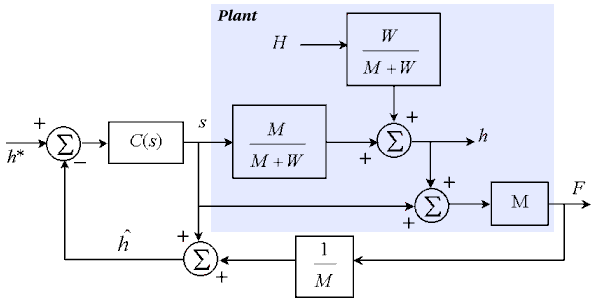

You are here : Control System Design - Index | Simulations | Rolling Mill | Part 3
Rolling Mill Tutorial - Part 3
Before continuing, make sure you have read Chapter 7.
Soft Sensors
The most common method of avoiding the time delay in the measurement of exit thickness h is to infer the exit thickness from the force on the rolls (which can be easily measured). Such a devices are known as BISRA gauges, and were first invented in 1954. Since
F = M ( h - s )
we can measure force and then estimate exit thickness as

The following diagram shows the resulting system.

Java Applet Simulation
The JAVA applet below is a simulation of the above system. As before, the control parameters have been chosen as kp = 10 and ki = 100. The graph again has a vertical scale of 0.1mm per division. It shows the set-point (the blue trace) and the actual exit thickness h (the green trace).
By eliminating the delay in the system, we allow much faster responses (with time constants as low as 10ms). Since such fast responses would not be easily visible in real-time, the simulation below allows the user to slow down the passage of time in the simulation. In the "Simulation Parameters" window, the time per horizontal division of the graph can be varied, like an oscilloscope. This time/division also affects the animation presented beside the graph. (This simulation is of course a discrete time approximation of the continuous time system. The time step for the simulation is 0.001 seconds due to the speed of the system, so if you change the time scale to 2 sec/div, the simulation has to try and do 1000 time steps each second, which may result in the simulation slowing down on slower computers. If the time scale is 0.2 sec/div, then only 100 time steps must be done per second, allowing the simulation to run much faster.)
Otherwise, the "Change Parameters" button allows you to change the same parameters as in the last simulation.
| Things to try | Things to notice |
| Run the simulation | The system's response is much faster now, but the sinusoidal variations are much larger |
| Change the set point to 0.3 | The delay has no effect on the set-point response |
| Change the input thickness to 0.5 | The delay now has now effect on the disturbance response |
| Increase the controller gain to try and increase the system's response speed | The gain must be much higher for the system to go unstable, meaning that this system can have a larger closed-loop bandwidth |
| Change the time scale on the graph to 2 sec/div and compare the magnitude of the sinusoidal variations to the previous example | The sinusoidal variations are approximately three times larger using the BISRA gauge |
You have most likely observed that now the system's response speed is now very fast. However, the sinusoidal variations in the output have increased in size to the point where they can no longer be ignored. (Previously, the time delay was our main concern.)
Next, we look at the source of these variations and a possible solution.